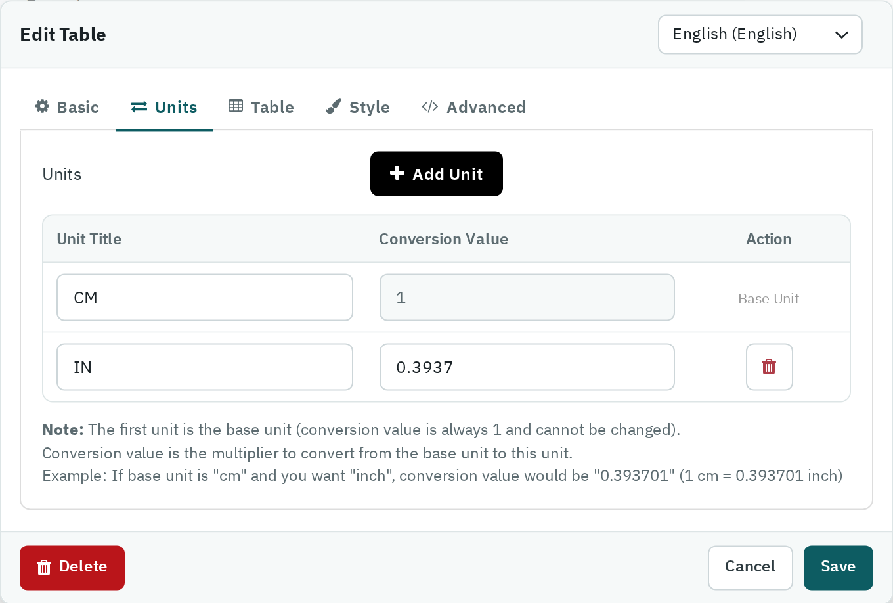

- Units — add units such as CM and IN. The first unit is the base unit; the conversion value of each other unit is the multiplier from the base unit (for inches from centimetres: 0.393701). With two or more units, the shopper gets a button group to switch, and every number in the table is converted.

The Units tab: CM is the base unit, IN converts with 0.3937.